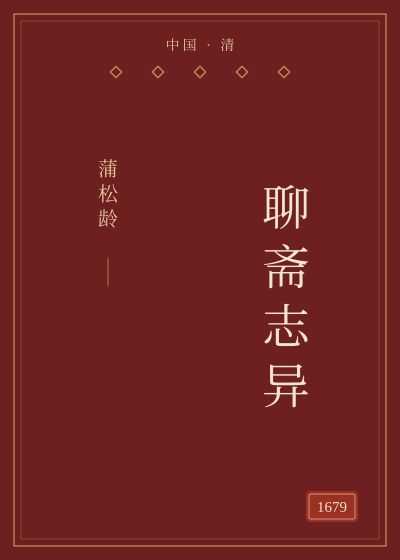

聊斋志异
一、基本信息
| 作者 | 蒲松龄 |
|---|---|
| 成书/出版 | 约1679年大体完成，增补至1707年；首次刊行在作者身后约五十年 Pu Songling — Encyclopaedia Britannica（百科全书） |
| 国别/地区 | 中国 |
| 时代 | 古代 · 清 |
| 体裁 | 文言短篇小说集 |
| 语言 | 汉语（文言） |

二、创作背景
明末清初，文言小说已衰落数百年；蒲松龄以科举失意者的全部怨愤与想象力，在乡村塾馆的青灯下重建了志怪传统。Britannica 记其创作'largely completed by 1679'，此后增补至1707年，共四百三十一篇。
采风传说：相传作者曾在柳泉边设茶待客、搜集奇闻（此为流传甚广的传说，见邹弢《三借庐笔谈》记载，学界有质疑——本页转述并标存疑）。书中大量篇章注明故事来源（同乡、友人转述），显示其素材确有民间性。
刊行：生前无力刊刻，抄本流传；死后约五十年（1766年前后青柯亭本）首次付梓，风行天下（Britannica：'first printed about 50 years after his death'）。
三、内容脉络
全书431篇，短者数百字、长者数千字，题材大略三类：其一，人鬼狐妖之恋——《婴宁》《聂小倩》《莲香》《香玉》等，花妖狐魅比人更多情；其二，科举与官府批判——《叶生》《司文郎》写书生的沉沦，《促织》写一头蟋蟀逼得家破人亡，《席方平》写冥府的冤狱即人间的衙门；其三，寓言讽刺——《画皮》警恶、《崂山道士》讽侥幸、《劳山道士》式短章辛辣如刀。
代表名篇：《婴宁》写笑之天真与礼法之碾磨；《聂小倩》人与鬼的救赎；《画皮》'明明妖也，而以为美'的著名寓言；《促织》'天子一跬步皆关民命'的沉痛（引语为篇末评语意译，待核）；《席方平》魂赴冥司层层告状而层层皆黑。
每篇末缀'异史氏曰'，或点题、或鸣不平，构成全书第二声部——蒲松龄以'异史氏'自称史官，其野心与司马迁遥遥相应。
四、主要人物表
| 人物 | 身份 | 说明 |
|---|---|---|
| 婴宁 | 狐母所生之女 | '笑辄不辍'的天真女儿，最终被礼法'教化'至不笑——纯真之死的寓言 |
| 聂小倩 | 被妖驱使的鬼女 | 以色劫财的工具变为书生宁采臣的守护者，救赎叙事 |
| 席方平 | 魂赴冥府告状的孝子 | 层层贿赂的阴间即层层贿赂的阳间 |
| 成名之子 | 《促织》中魂化蟋蟀的孩童 | 一头蟋蟀压垮一个家庭的荒诞悲剧 |
| 书生群像 | 各篇主人公 | 痴情者得狐女，迂腐者遭嘲弄，薄幸者被报复——作者的道德天平 |
五、主题与艺术特点
- 以幻写真：鬼狐世界是人间社会的镜像——冥府即衙门、狐宅即家庭、妖界即科场；'志异'实为'志世'。
- 科举创伤的书写：书生落魄、文运颠倒的故事群（叶生、司文郎、王子安）寄托作者一生的科场怨愤。
- 女性想象力的解放：狐女鬼女自主择偶、智勇过人、救书生而非被救，是传统小说中最接近'平等爱情'的形象群。
- 艺术特点：文言短篇的叙事经济学（数百字立起一个世界）、'异史氏曰'的论赞体、花妖狐魅的人情化。
六、影响与评论
- Britannica：'复兴了文言短篇小说的体裁'（resuscitated the classical genre of short stories），引发模仿风潮。
Pu Songling — Encyclopaedia Britannica（百科全书） - Britannica：全书431篇、1679年大体完成、死后约50年首次刊行——版本与规模的基本事实。
Pu Songling — Encyclopaedia Britannica（百科全书） - 对后世的影响：纪昀《阅微草堂笔记》的回应式写作、现代文学中鲁迅《中国小说史略》的高度评价（'专集之最有名者'，转述待核），以及戏曲影视（《画皮》《聂小倩》改编无数）。
Pu Songling — Encyclopaedia Britannica（百科全书） - 世界范围：多语种译本使蒲松龄成为最知名的中国古典小说家之一（本条为一般性概括，译本年表待核）。
Pu Songling — Encyclopaedia Britannica（百科全书）
七、阅读建议
- 文言密度高（但比唐传奇平易），可从短篇入手。
- 篇目多而无序列，宜按题材专题化阅读（狐女/科场/公案）。
- 明清注释系统（吕湛恩、何守奇评等）庞杂，选一种现代校注本即可。
- 《聊斋志异会校会注会评本》（张友鹤辑校，上海古籍出版社）：'三会本'，集大成。
- 人民文学出版社选注本《聊斋志异选》：精选名篇，入门首选。
- 马瑞芳《马瑞芳讲聊斋》等现代导读可作伴读。
先读《婴宁》《聂小倩》《画皮》《促织》《席方平》《劳山道士》六篇建立标准 → 再按专题（爱情/科举/公案/寓言）扩展 → 最后读'异史氏曰'集中的愤懑篇章与俚曲对照。
八、待核实
- 篇数431（Britannica 口径）与通行'491篇'（三会本收文口径）等异说并存——差异源于对附录、附则的认定。
- 柳泉设茶采风的传说（出自《三借庐笔谈》）学界多疑为附会，本页仅作传闻转述。
- 青柯亭本刊行年份（1766）的准确月份与编者（赵起杲）细节待核。
- 名句（如《促织》评语）本页未逐字引用，待核原文。
本页主要来源
蒲松龄的其他收录作品：聊斋志异